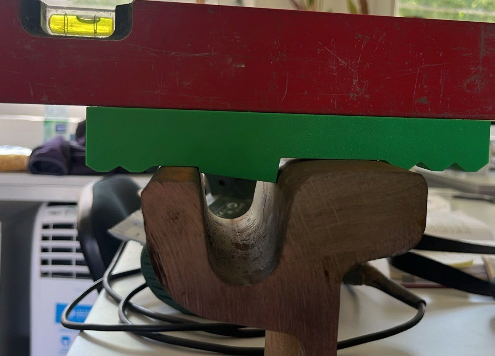
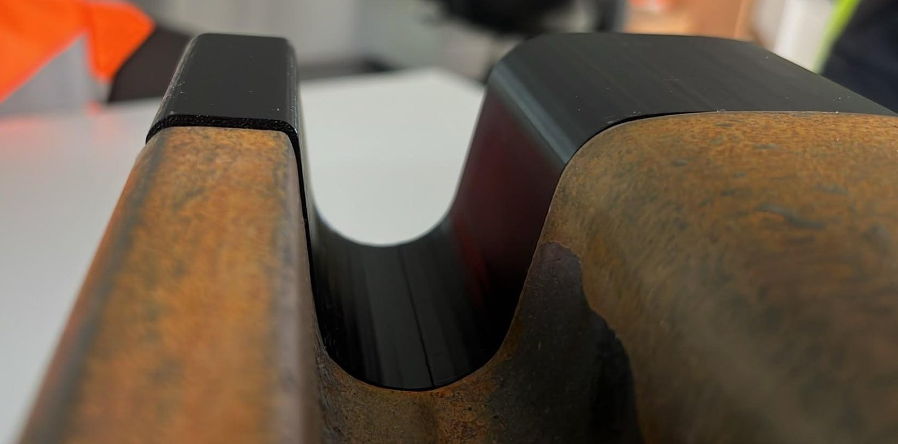
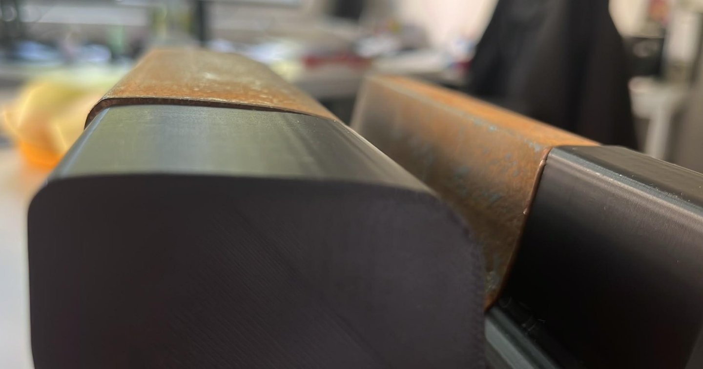
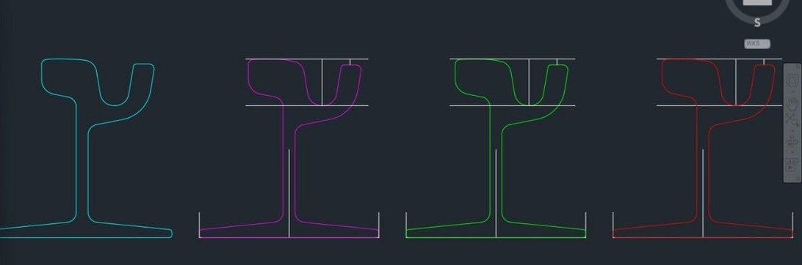
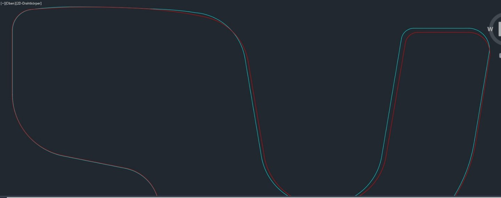
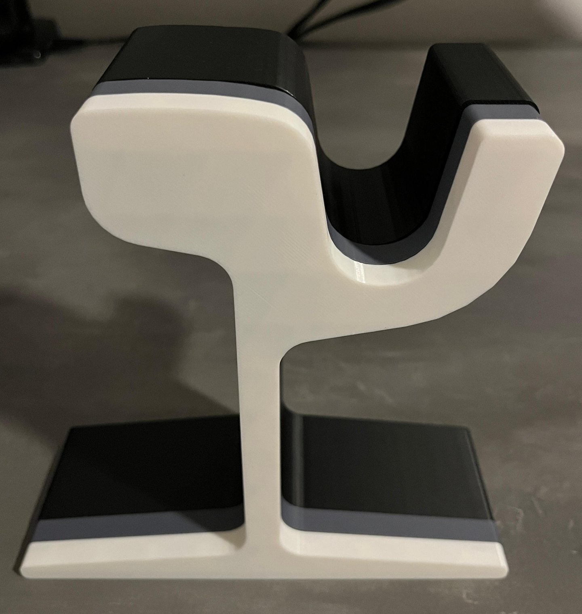
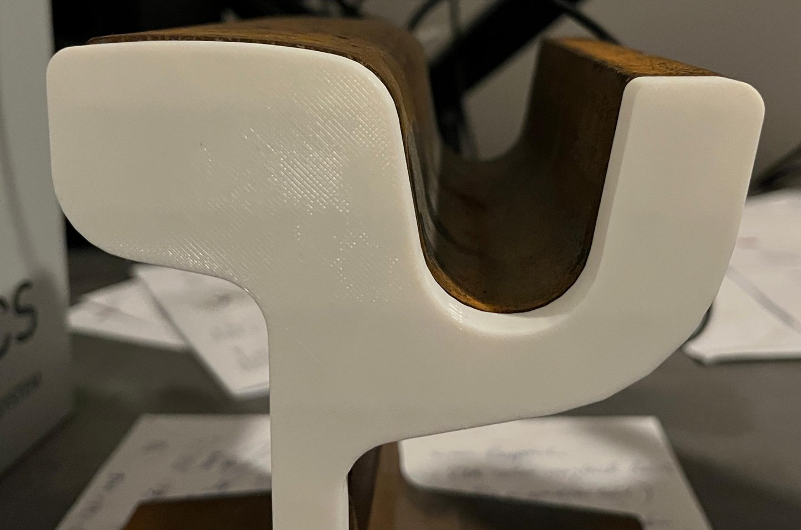
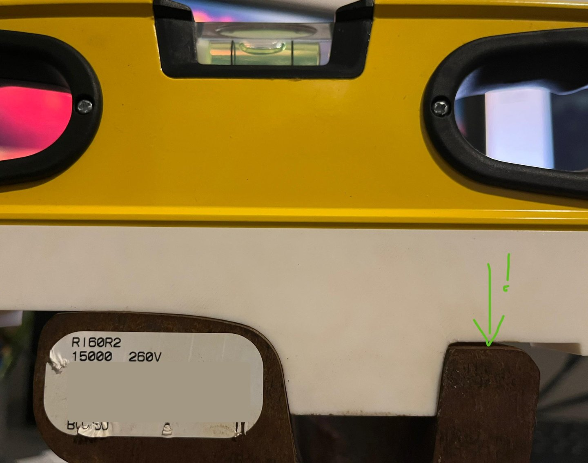
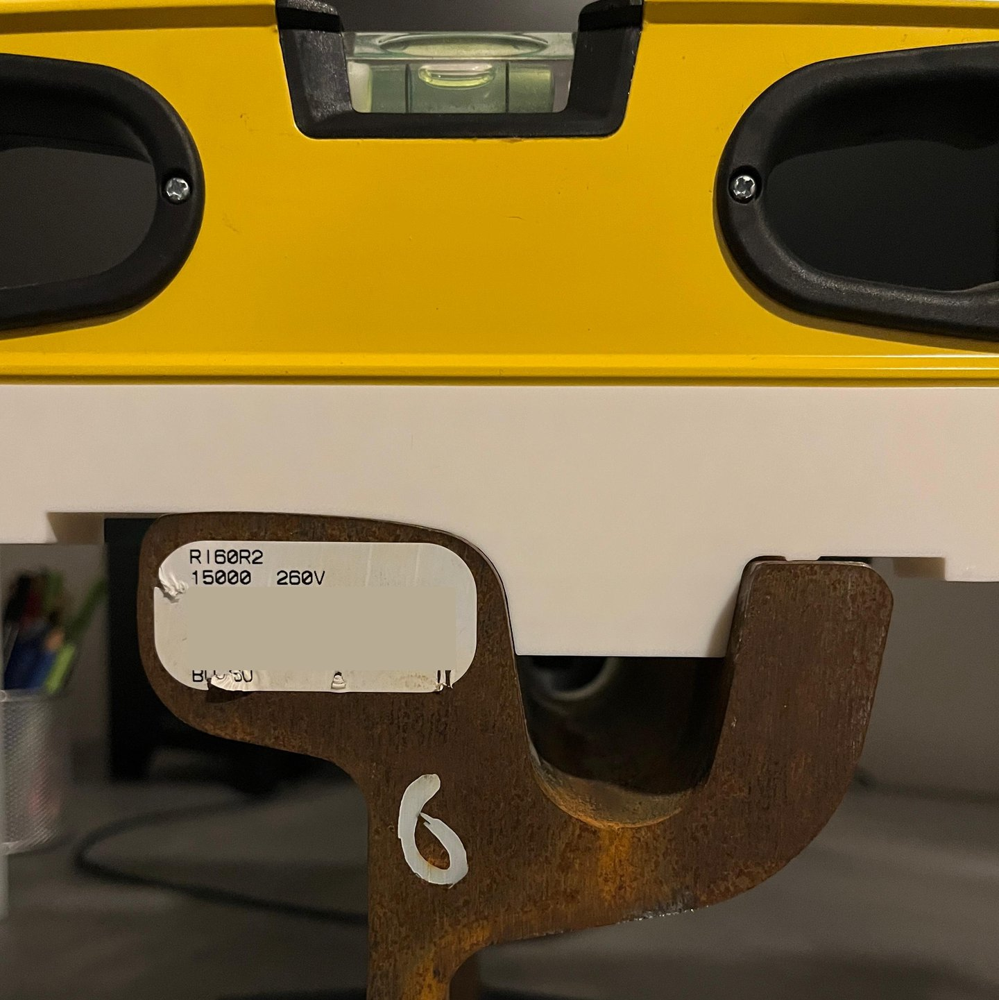
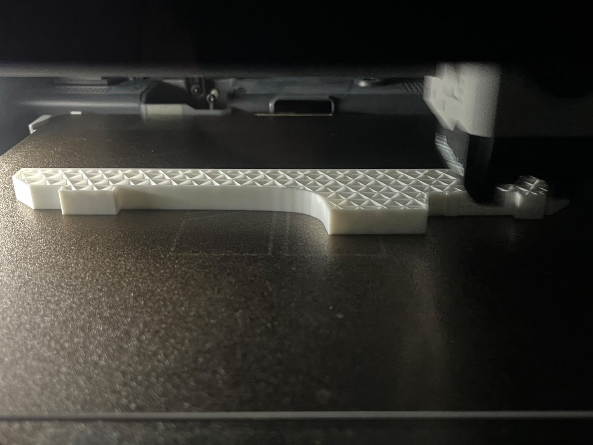

Messlehre zur Überprüfung der Höhe des Fugenvergusses an Leipziger Straßenbahnschienen mit Profil 60R2
Ausgangssituation
Nach den Schäden durch das Überlaufen geschmolzener Fugenmasse in heißen Sommerwochen 2026,
entstand der Wunsch einer zusätzlichen Prüfmethode für die Höhe des Schienenlängsvergusses.
Diese zusätzliche Überprüfung bezieht sich auf die Kontrolle im Rahmen der Bauüberwachung
und auf LVB-Vorgaben für neugebaute Gleisabschnitte mit dem oben genannten Schienenprofil:
Vergusshöhe: 5 mm unter Fahrkopfoberkante, 3 mm unter Leitkopfoberkante
Streifenbreite: 55-60 mm neben Fahrkopf, 30-35 mm neben Leitkopf
Erstentwurf
Auf Basis einer vorliegenden DWG für das Schienenprofil sind per CAD-Konstruktion und STL-Export,
mit den selben Einstellungen für den jeweiligen 3D-Druck (PLA, 2 Schichten Außenwand, 10% Infill Muster "kubisch adaptiv")
ein 50 mm langes Schienenstück und 2 einfache 25 mm tiefe Prototypen entstanden.
Diese sitzen auf der gedruckten Schiene in Waage, jedoch nicht auf einem Stück Stahlschiene, wie das folgende Bild zeigt:

Das Prüfen des ersten gedruckten Profils gegen das Profil der Stahlschiene zeigt nicht unerhebliche Abweichungen:


Nachkonstruktion
Mittels der (auf der Produktseite öffentlich zugänglichen) bemaßten Zeichnung des Herstellers voestalpine, und letztlich auch mithilfe der bemaßten Zeichnung aus der DIN EN 14811 (2010 und 2019), wurde das Profil in AutoCAD iterativ nachkonstruiert:

Nachdem im letzten Schritt vor allem die Ausrundungen korrigiert wurden, zeigt eine Überlagerung der Profilkonturen die Abweichungen recht deutlich:



Ausgleich von Fertigungstoleranzen
Nach dem Erreichen einer Übereinstimmung des Profils mit der bemaßten Zeichnung, fällt eine weitere Abweichung auf:

Dass die Profilkontur mittlerweile korrekt konstruiert war, konnte durch einen Abgleich mit einer
vom Hersteller zur Verfügung gestellten Original-DXF verifiziert werden.
Trotzdem liegt die rein gemäß der Profilkontur erstellte Messlehre in waagerechter Position
nur auf dem Fahrkopf, nicht jedoch auf dem Rillenkopf auf.
Für den Ausgleich der (produktlebenszeit-freundlichen) Materialmehrung auf dem besonders von
Verschleiß betroffenem Fahrkopf, wurde an der Messlehre ein 0.65 mm hoher Steg
zur Auflage auf dem Leitkopf ergänzt.
Der Messsteg für den Abstand zur Fugenmasse auf Leitkopfseite wurde entsprechend verlängert.

Spezifika der aktuellsten Version
An der entstandenen Messlehre sind die Messstege etwa mittig in den Vergussfugen (je nach Streifenbreite) angeordnet. Die Maße werden nach Länge/Breite, Höhe und Tiefe angegeben. Der Messsteg auf der Fahrkopfseite ist 20 mm breit und jener auf der Leitkopfseite ist 10 mm breit. Die Messstege sind in der Mitte 0,1 mm höher als die Abstandsvorgabe zur Fugenmasse, um deren leicht konkave Ausformung nach der Aushärtung auszugleichen. Mit der Gesamtbreite der Messlehre kann mittels Blick von oben zusätzlich überprüft werden, ob die vorgesehene Breite der Längsverguss-Streifen (i. d. R. max. 60 mm von Fahrkopfaußenkante und 35 mm von Leitkopfaußenkante) eingehalten wird. Die bisher verwendete weiße Farbe des Materials, hilft mittels der Ablagerung von Schienenrost, dabei Druckstellen und Abreibungen selbst bei vorsichtiger Verwendung zu erkennen. Die Tiefe beträgt, wie schon bei den ersten Prototypen, 25 mm. Für eine höhere Stabilität bei der Verwendung im Außeneinsatz wurden 3 Schichten Außenwand und 25 % Infill ("kubisch-adaptiv") gewählt. Die Toleranz des verwendeten Drucker-Setups (Modell, Druckkopf, Düse) kann (je nach Achse und Einstellungen) zwischen 0,05 und 0,3 mm betragen. Das nachfolgende Bild zeigt die aktuellste Version der Messlehre während des Drucks:

Für eine zukünftige Version werden Wünsche aus dem Einsatz gesammelt und es ist vorgesehen die Höhe des Steges zur Auflage auf dem Leitkopf von 0,65 auf 0,7 mm zu erhöhen.